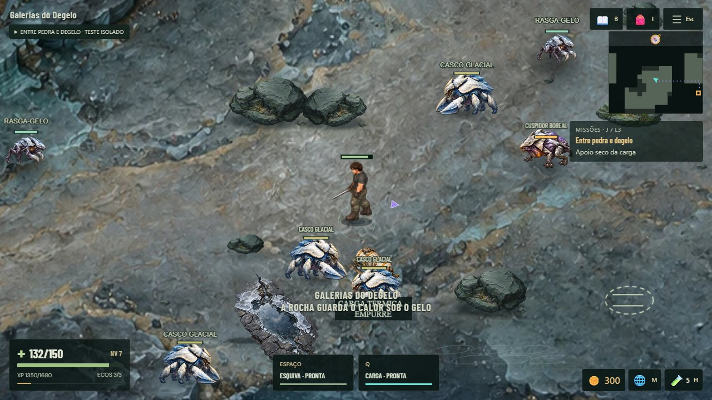
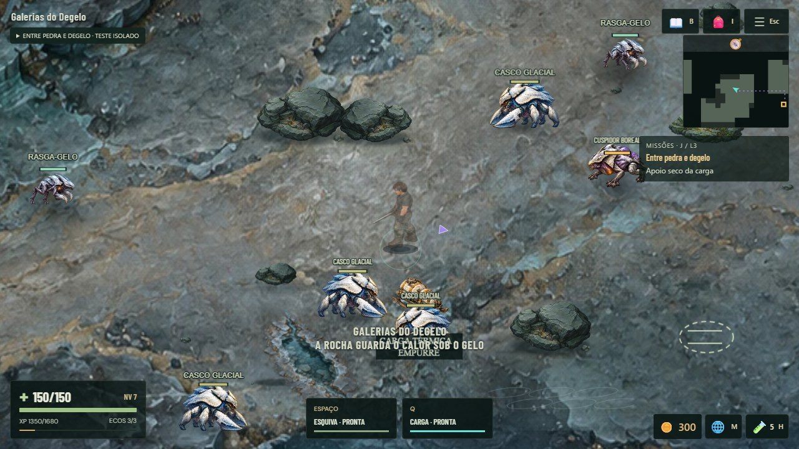
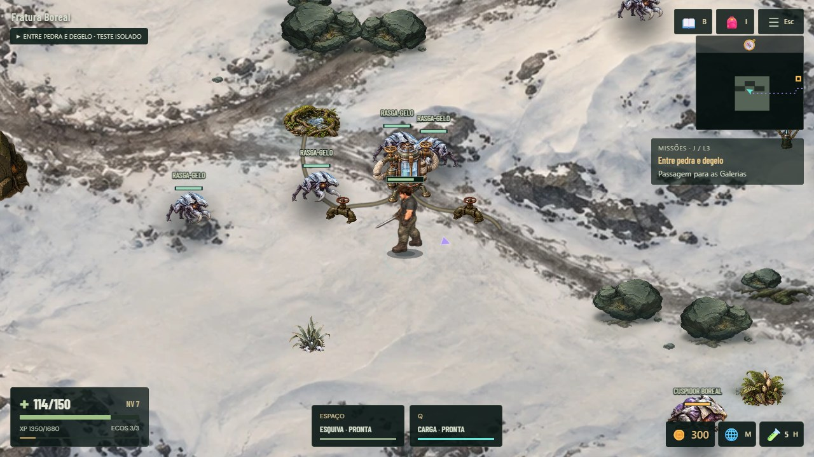
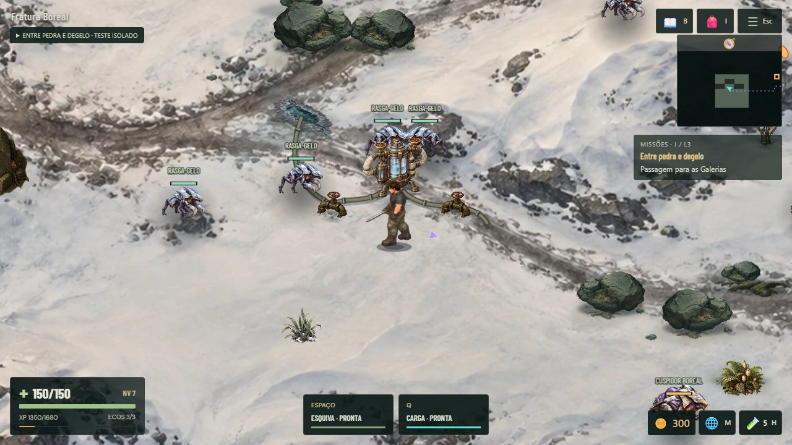
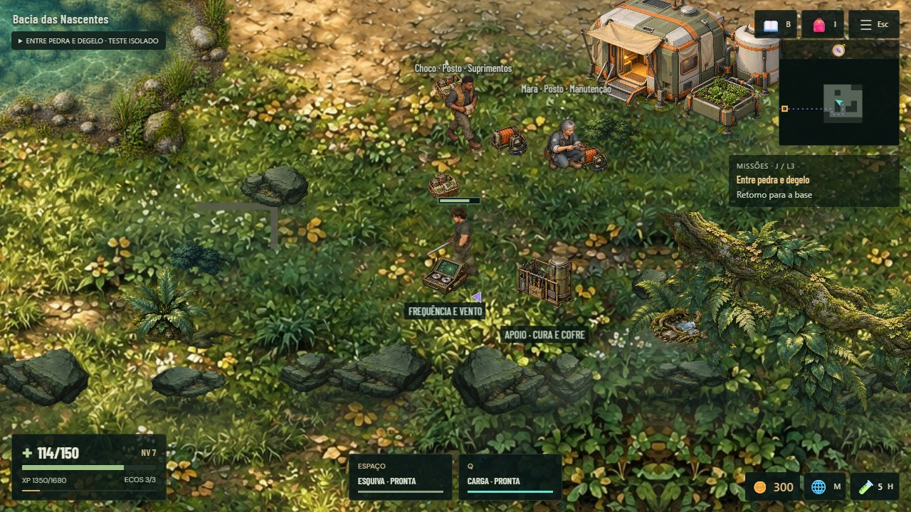
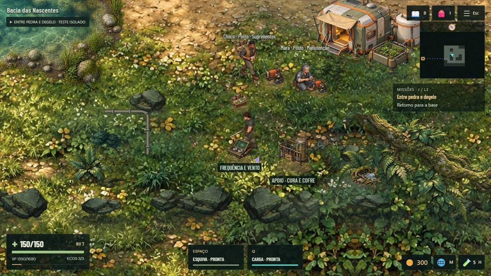
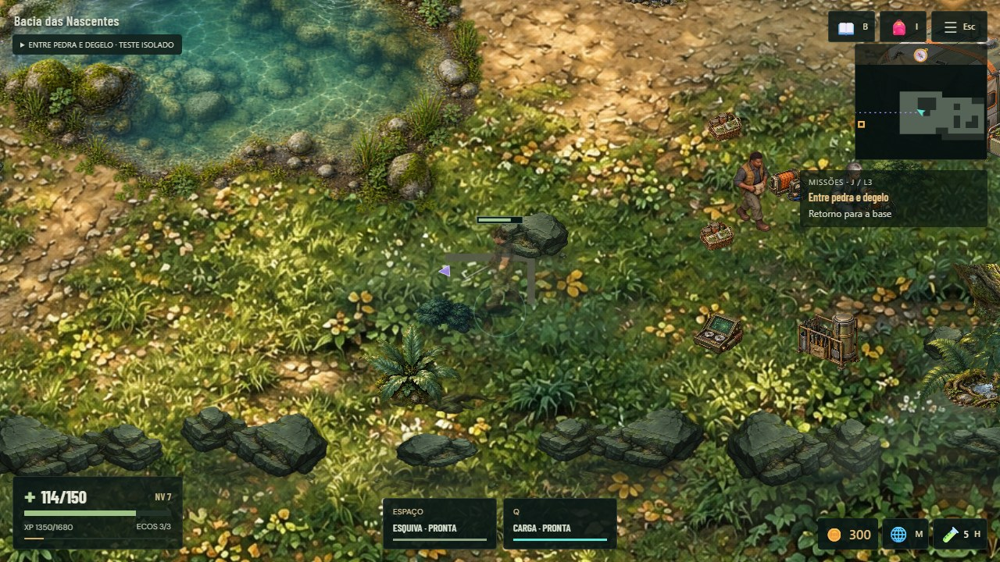

Mesma fixture e enquadramentos. Capturas integrais, sem retoque/correção de cor. Posições DEV para inspeção; encontros ativos, herói pode usar invulnerabilidade de cobertura. A inspeção do agente não substitui aprovação humana.






